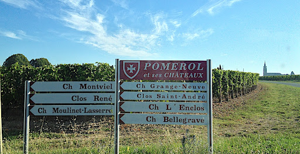
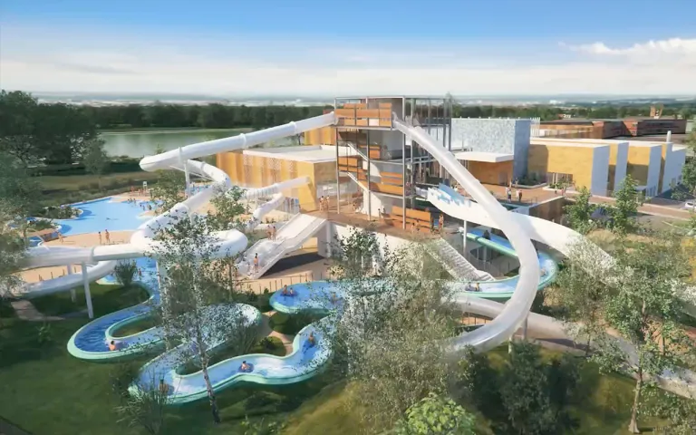

Oenotourisme à Pomerol
Vous aimez le vin et plus particulièrement le Pomerol ? Ne cherchez plus, vous avez trouvé votre destination pour un week-end !
En collaboration avec une agence de voyage, 9 propriétés bordelaises (Château Beauregard, Château Clinet, Clos du Clocher, Château la Conseillante, Château Gazin, Château Mazeyres, Château Petit-Village, Château Rouget et Château Vieux Maillet) se regroupent et s’associent pour promouvoir leurs produits, leurs valeurs et leur savoir-faire, sous le nom de Pomerol Séduction.
Ainsi les deux premiers week-ends d’octobre sont ouverts à tous pour un court séjour-découverte « Pomerol Séduction ».
Au programme : itinéraire à vélo (accessible à tous) au travers des 9 propriétés, visite approfondie de 6 d’entre elles, repas pris dans les propriétés en présence des viticulteurs, dégustations de vins…
L’AOC Pomerol n’aura plus de secret pour vous…

La Calinésie
La Calinésie vous accueille et vous propose un moment de bien-être, dans son lagon détente.
Cet espace est équipé d’un sauna, de deux hammams, d’un bain bouillonnant, d’un bain musical et d’un grand bassin de relaxation avec banquettes massantes et jets massants. La température des bassins est comprise entre 32 et 35°C.
Le lagon détente c’est aussi un bassin nordique extérieur chauffé à 32° toute l’année, il dispose d’une terrasse en bois jouissant d’un panorama exceptionnel dominant le lac des Dagueys.